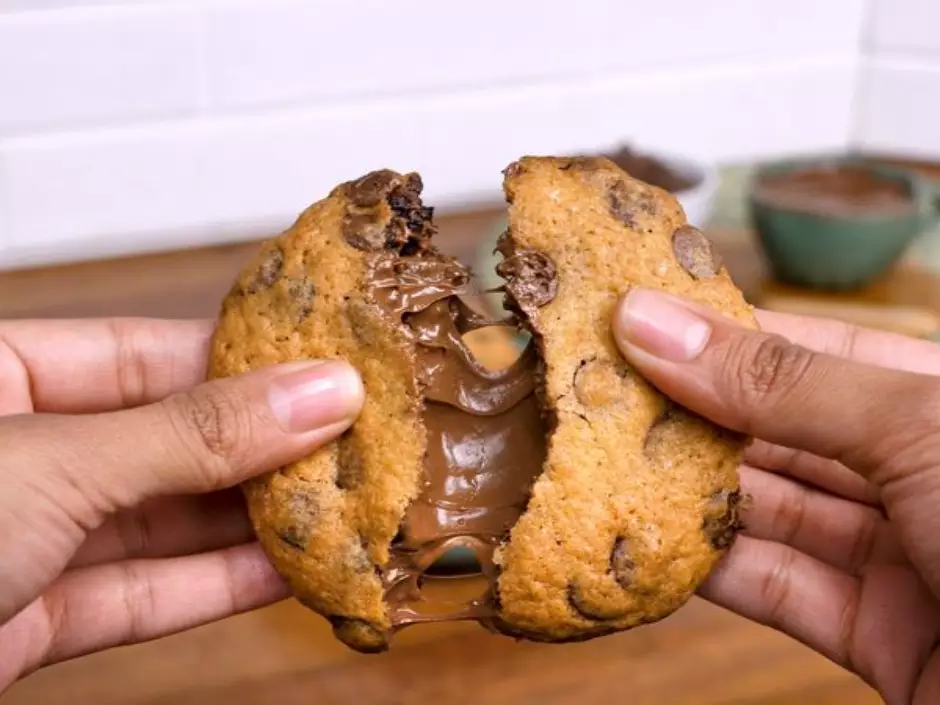

Cookie Recheado
Cookies recheados são cookies que antes de serem assados é adicionado recheio para ficarem ainda mais deliciosos
Cookies recheados são cookies que antes de serem assados é adicionado recheio para ficarem ainda mais deliciosos
Os Cookies Clássicos, uma criação simples porem cheia de Sabor, nada é tão gostoso quando uma massa sabor baunilha, crocante por fora e cremosa por dentro, com o cotas de chocolate.
Cookies de chocolate são como os cookies clássicos porem modificado para os amantes de chocolate, alem das gotas de chocolate a massa tambem é de chocolate realçando ainda mais o seu sabor
Os cookies na internet são ferramentas essenciais da navegação online. Eles não apenas lembram quais sites você visitou, mas também as informações de formulários, de modo a tornar a navegação e preenchimento de dados mais rápidos e eficientes.